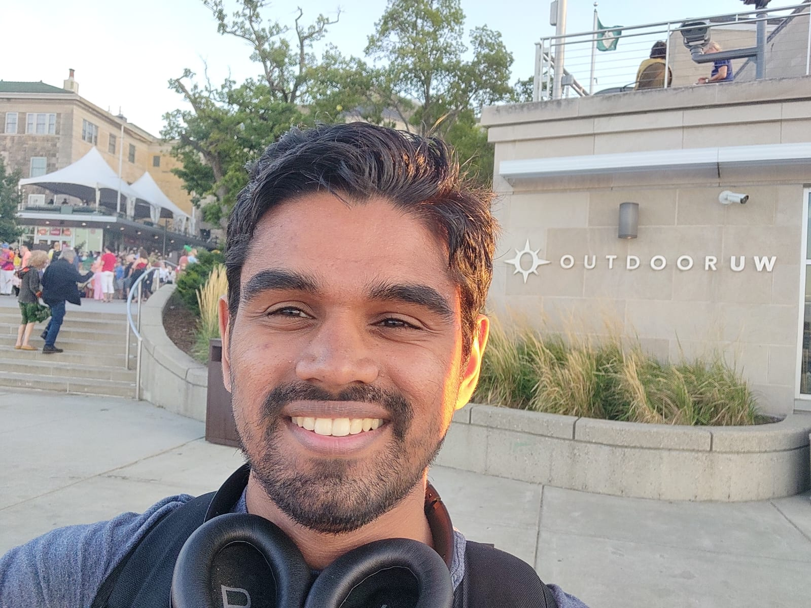
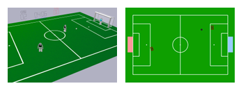
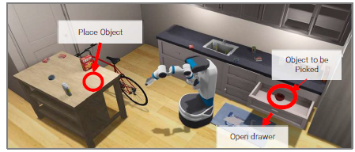

|
Abhinav Narayan Harish
I am a CS PhD student at University of Wisconsin Madison working with Professor Josiah Hanna. Prior to this, I was a Master's student with Professor Zsolt Kira working on using Reinforcement Learning (RL) for long-horizon rearrangement.
I received my Bachelor's degree in Electrical Engineering with a minor in Computer Science from IITGN .
Broadly, I'm interested in Reinforcement Learning (RL) and it's application in the field of Robotics. My goal is to explore using end to end RL to learn long horizon tasks in simulation, and transfer them to the real world.
CV /
Google Scholar /
LinkedIn /
GitHub
|

|
|

|
Reinforcement Learning Within the Classical Robotics Stack: A Case
Study in Robot Soccer
Adam Labiosa, Zhihan Wang, Siddhant Agarwal, William Cong, Geethika Hemkumar,
Abhinav Narayan Harish, Benjamin Hong, Josh Kelle, Chen Li, Yuhao Li, Zisen Shao,
Peter Stone, Josiah P. Hanna
ICRA 2025
pdf
→
Abstract
Robot decision-making in partially observable, real-time, dynamic, and multi-agent environments remains a difficult and unsolved challenge. Model-free reinforcement learning (RL) is a promising approach to learning decision
making in such domains, however, end-to-end RL in complex environments is often intractable. To address this challenge in the RoboCup Standard Platform League (SPL) domain, we developed a novel architecture integrating RL within a classical robotics stack, while employing a multi-fidelity sim2real
approach and decomposing behavior into learned sub-behaviors with heuristic selection. Our architecture led to victory in the 2024 RoboCup SPL Challenge Shield Division. In this work, we fully describe our system’s architecture and empirically
analyze key design decisions that contributed to its success. Our approach demonstrates how RL-based behaviors can be integrated into complete robot behavior architectures.
|

|
Reinforcement Learning via Auxiliary Task Distillation
Abhinav Narayan Harish, Larry Heck, Josiah Hanna, Zsolt Kira, Andrew Szot
European Conference of Computer Vision, 2024
pdf / code
→
Abstract
We present Reinforcement Learning via Auxiliary Task Distillation (AuxDistill), a new method that enables reinforcement learning (RL) to perform long-horizon robot control problems by distilling behaviors from auxiliary RL tasks. AuxDistill achieves this by concurrently carrying out multi-task RL with auxiliary tasks, which are easier to learn and relevant to the main task. A weighted distillation loss transfers behaviors from these auxiliary tasks to solve the main task. We demonstrate that AuxDistill can learn a pixels-to-actions policy for a challenging multi-stage embodied object rearrangement task from the environment reward without demonstrations, a learning curriculum, or pre-trained skills. AuxDistill achieves 2.3x higher success than the previous state-of-the-art baseline in the Habitat Object Rearrangement benchmark and outperforms methods that use pre-trained skills and expert demonstrations.
|
|

|
Skill-Chaining for Long-Horizon Rearrangement
Abhinav Narayan Harish
Master's Thesis, Georgia Institute of Technology
pdf
→
Abstract
Given a set of pre-trained skills performing specific aspects of rearrangement, i.e. Navigating, Picking up or Placing objects, we developed a hierarchical fine-tuning scheme that can fine-tune these policies simultaneously. Our method addresses the hand-off challenge in rearrangement where subsequent skills are not aligned (i.e. the navigation skill terminates too far from the couch). Our method demonstrates superior performance (about 13% in rearrangement success) over a static policy.
|

|
RGL-NET: A Recurrent Graph Learning Framework
Abhinav Narayan Harish, Rajendra Nagar,
Shanmuganathan Raman
WACV, 2022
pdf /
code
→
Abstract
We propose an assembly framework that can assemble a shape in a canonical order by progressively gathering information. Compared to prior frameworks, our method achieves up to 10% improvement in part accuracy and 15% improvement in connectivity accuracy.
|
|